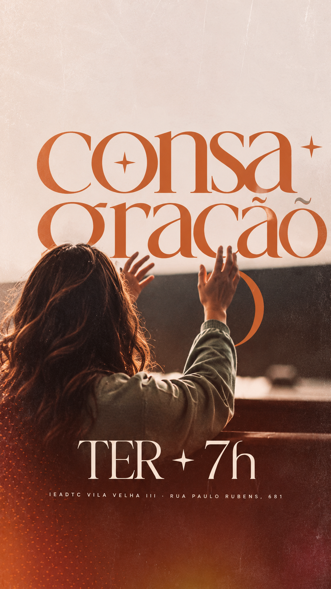

IEADTC Vila Velha III
Story · Consagração
Terça, 24/11 · 07:00 às 08:00

Sugestões para o story
- Música de fundo
- Pela Manhã Te Buscarei · Fernandinho e Paula Santos
- Parte da música
- o começo
- Por que essa música
- fala de buscar a Deus de manhã, a primeira hora do dia
- Em cima da imagem
- Figurinha de contagem regressiva: Consagração, terça às 7h